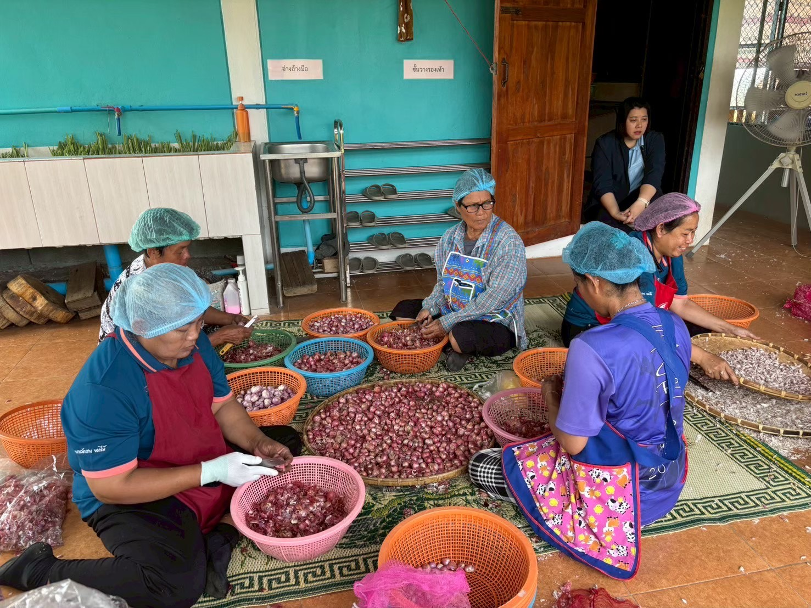
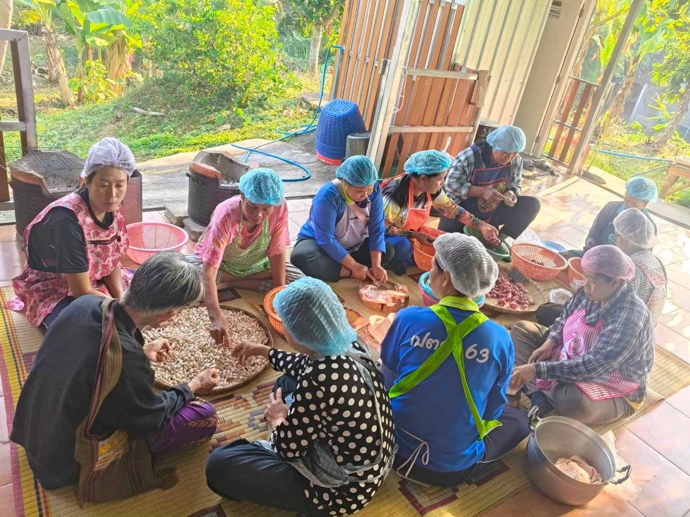
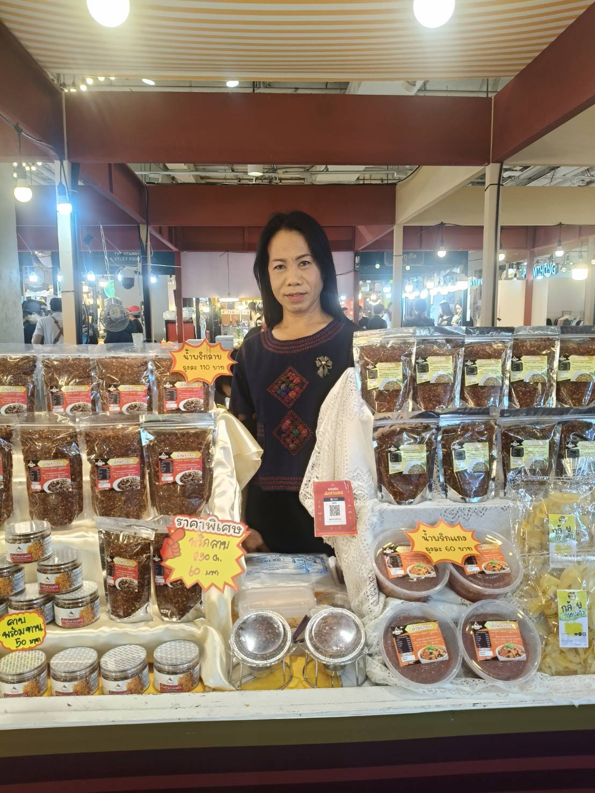
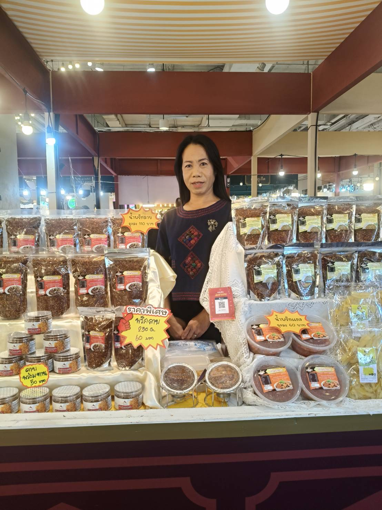
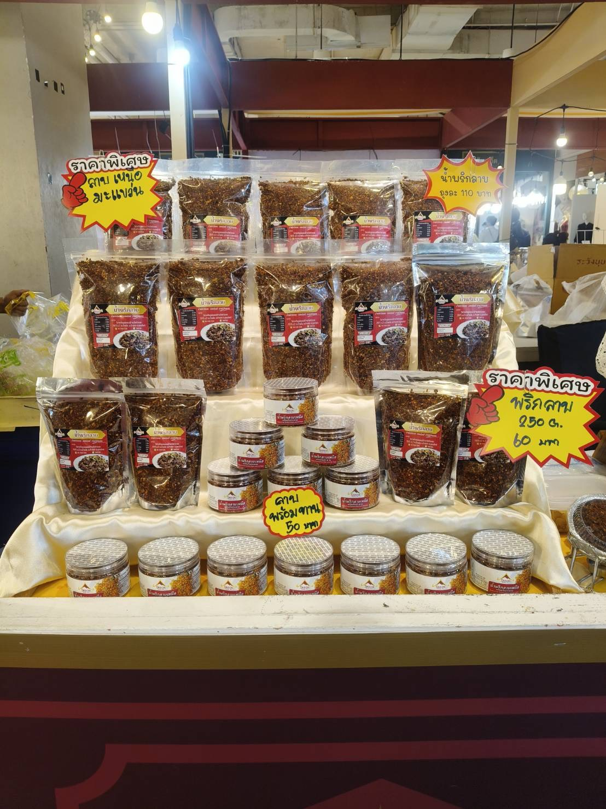
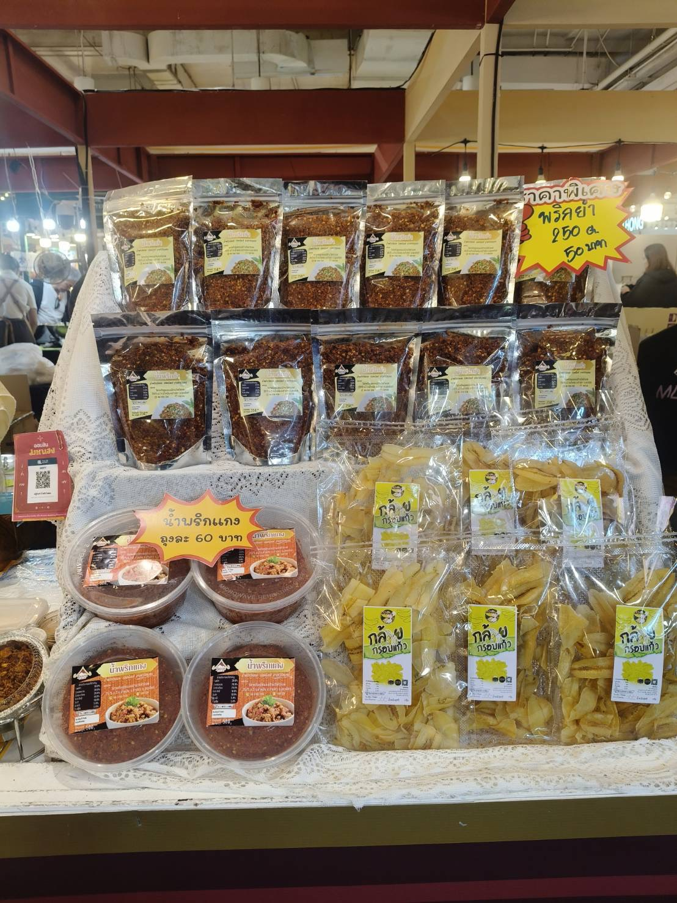

ที่อยู่: 29/5 ม.2 ต.น้ำหมัน อ.ท่าปลา จ.อุตรดิตถ์ 53150 (สมาชิก 21 คน)
ต้องการพัฒนาผลิตภัณฑ์น้ำพริกให้เป็นรูปแบบพร้อมทาน เนื่องจากมีผู้บริโภคในปัจจุบันนิยมทานอาหารที่สะดวก รวดเร็ว และยังเป็นการเพิ่มมูลค่าให้กับผลิตภัณฑ์ สร้างความแตกต่าง ตอบโจทย์วิถีชีวิตคนรุ่นใหม่





